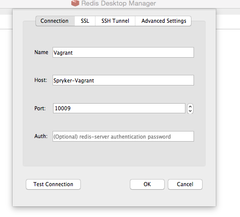

Using Redis as a KV Storage
This article describes how Redis is used within Spryker; the current functionality can be extended according to your needs.
About
Redis is a key-value data store and for the values it supports a large collection of data structures, such as strings, hashes, lists or sets.
The following table shows how translations are stored:
| Locale | Key | Value |
|---|---|---|
|
de_DE |
kv:de.de_de.glossary.translation.global.cart |
Warenkorb |
|
en_US |
kv:de.en_us.glossary.translation.global.cart |
Cart |
The value for the translations are stored as strings, but more complex types, such as product information, are stored in a JSON format.
The key name follows this format: kv:{store}{locale}{resource-type}{key}.
Redis Data Storage
The data stored in Redis includes:
- URL mappings
- Product details
- Product category details
- Stock information
- Translations
- CMS pages and blocks
How is data loaded into Redis
Data is loaded in Redis through a dedicated console command. This console command is executed when the application is initially installed, but you can execute it also from the command line:
console collector:storage:export
To find out more about how the Collector module works and how to extend it, you can read more here.
How is data kept in sync
Of course, the data stored in the SQL database is the subject of change; data can be updated or deleted or new entries can be added. The data that’s currently stored in Redis it’s a snapshot of the data in the SQL database from when the last update was run. The key-value data storage must be kept in sync with the data persisted in the SQL database. In order to achieve this, you must setup a cron job that runs on a specified time interval, that updates the key-value data storage.
For more information see Cronjob Scheduling.
Also, you must find out which data has changed because you don’t want to completely reload the content stored in Redis. The Touch module takes care of marking the items that were updated in the mean time. You must keep in mind that every time you make an update/delete/insert for data that’s also stored in Redis, you must touch that data so that it’s marked for export when the next storage update task will run.
How to browse the data from Redis
In order to be able to browse the data that’s stored in Redis you must setup Redis Desktop Manager(RDS). Install RDS from here, then Configure as shown in the screenshot below.
Find the current Redis Port in config/Shared/config_default-development.php.

Make sure that your virtual machine is up and running.
Using the data stored in Redis
Translations
For showing content translated according to the selected locale, you can use the translation extension from twig; you just have to specify the key name and pipe it to the trans extension. When rendered, the value that corresponds to the selected locale for that key will be shown.
E.g.
<button>{{ "page.detail.add-to-cart"|trans }}</button>
The caption for the button will be, depending on the selected locale:
| Locale | Key | Value |
|---|---|---|
|
de_DE |
kv:de.de_de.glossary.translation.page.detail.add-to-cart |
In den Warenkorb |
|
en_US |
kv:de.en_us.glossary.translation.page.detail.add-to-cart |
Add to Cart |
Accessing the Redis data storage
Redis data storage is accessed using the StorageClient.
The StorageClient can be obtained as an external dependency for Yves, in the client layer. In the dependency provider of the client layer from your module, add the StorageClient dependency as in the example below:
<?php
const KV_STORAGE = 'kv storage';
/**
* @param \Spryker\Client\Kernel\Container $container
*
* @return \Spryker\Client\Kernel\Container
*/
public function provideServiceLayerDependencies(Container $container)
{
$container[static::KV_STORAGE] = function (Container $container) {
return $container->getLocator()->storage()->client();
};
return $container;
}
Add a method that retrieves an instance of the key value storage in the factory of the client layer of your module:
<?php
/**
* @return \Spryker\Client\Storage\StorageClientInterface
*/
public function getStorageClient()
{
return $this->getProvidedDependency(MyBundleDependencyProvider::KV_STORAGE);
}
To retrieve the value for a given key, you can use the get($key) operation from the StorageClient.
<?php
$storedValue = $this->storageClient->get($myKey);
Using a Password For Accessing Redis
It is possible to define a password to restrict access to Redis. Spryker provides the `\Spryker\Shared\Storage\StorageConstants::STORAGE_REDIS_PASSWORD` configuration option that can be used to configure the Redis client to authenticate Spryker.
To activate this, specify the `redis` protocol for `\Spryker\Shared\Storage\StorageConstants::STORAGE_REDIS_PROTOCOL` (the Spryker demo-shop uses `tcp` by default).